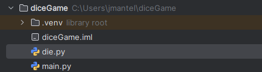
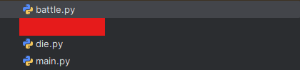

In this Python tutorial, we'll be making a fun dice game, similar to fun roguelike deckbuilder games that have been popping up. We won't be using anything other than the terminal this time, so no need to know a display library like Pygame or Raylib. Here are the steps to follow:
To start with, create a new folder, title it whatever you'd like (I'm titling mine diceGame.) Given that this is a dice game, we'll of course want to import random.
import random
Next, let's make the deck.
deck = []
And the game loop.
running = True while running: # Next Battles Preview # Battle Scene # Get Rewards & Upgrade Chance # Shop Scene pass
This is basically it for setup, so let's move onto making the Die object.
Create a new script in your editor called "die.py". The files open in your editor should look something like this:
Anyways, let's write the Die class. In die.py, import random once more.
import random
Initialize the class Die with the following variables
class Die(object): def __init__(self, minimum: int, maximum: int, mult: int, roll_count: int): self.minimum = minimum # The minimum value self.maximum = maximum # The maximum value self.mult = mult # The multiplier applied after rolling self.roll_count = roll_count # The amount of times to roll the die
Now, let's create a __str__ method. A __str__ method will display a customized str output when it's printed with print(). Write inside the Die class:
def __str__(self): return f"Min {self.minimum} | Max {self.maximum} | Mult {self.mult} | Roll {self.roll_count} times"
Time for the fun part: Rolling the die! Now it's time to create a roll() method using our previous initialized variables.
def roll(self): return sum([random.randint(self.minimum, self.maximum) for i in range(self.roll_count)]) * self.mult
To test if both these functions are working, you can add these lines to the end of your die.py file and run it.
my_die = Die(1, 6, 1, 3) print(my_die) print(my_die.roll())
If you used my exact code, your first line should look like
Min 1 | Max 6 | Mult 1 | Roll 3 times
and your second line should be a random number. If it's successful, remove these lines and save.
Now jump back to main.py and import your Die class under your random import.
from die import Die
Change your deck initializer to initialize with five random dice.
deck = [Die(1, 6, 1, 1) for i in range(5)] # Initial deck is five random regular dice
That's all for the Die class, so let's move on to making everything related to Battles.
Once again, create a new file called battle.py. Your files should now look like this:
Go to battle.py and do a similar initialization of class to the Die class, with some new variables. No importing Random this time.
class Battle(object): def __init__(self, battle_name, goal): self.battle_name = battle_name # The name of the battle. self.goal = goal # The goal number to reach with all your rolls. def __str__(self): return f"{self.battle_name}: Goal {self.goal}"
Now let's go back to main.py and write code to create the list of battles. Of course, import battle at the top of the file.
from battle import Battle
battles = [] for i in [30, 30*2, 30*3, 30*5, 30*7, 30*9, 30*12, 30*16, 30*20, 30*26, 30*32, 30*38, 30*50, 30*62, 30*74, 30*100]: battles.append(Battle("Battle", i))
Go to the running loop. Remove the "Next Battles Preview" Comment and write this code.
while running: try: for i in range(3): print(battles[i-1]) except IndexError: # Less than 3 battles left try: print(battles[0:1]) except IndexError: # Less than 2 battles left try: print(battles[0]) except IndexError: # No more battles left print("Congratulations! You've won all battles!") print("Your deck:") for i in deck: print(i) running = false if not running: break
To prepare for battles, define turns (int), rerolls (int), score (int) and roll (list) at the top, under when you initialize your deck.
turns = 4 rerolls = 3 roll = [] score = 0
Now for the main event: The battle code!
while score < battles[0].goal: for i in deck: roll.append(i.roll()) print(f"You have {rerolls} rerolls and {turns} turns left. Select the die you'd like to reroll...") print(f"Your current roll is: {roll} (Total {sum(roll)})\nYour current deck is:") for i in deck: print(i) userinput = input("Please enter a die number to reroll it or input 0 to submit this roll: ") try: if int(userinput) == 0: score += sum(roll) turns -= 1 else: temp = deck[int(userinput)-1].roll() roll[int(userinput)-1] = temp rerolls -= 1 except TypeError or ValueError: print("Incorrect input; try again.") if turns == 0 and score < battles[0].goal: print("Game over...") running = False break if not running: break
Next part